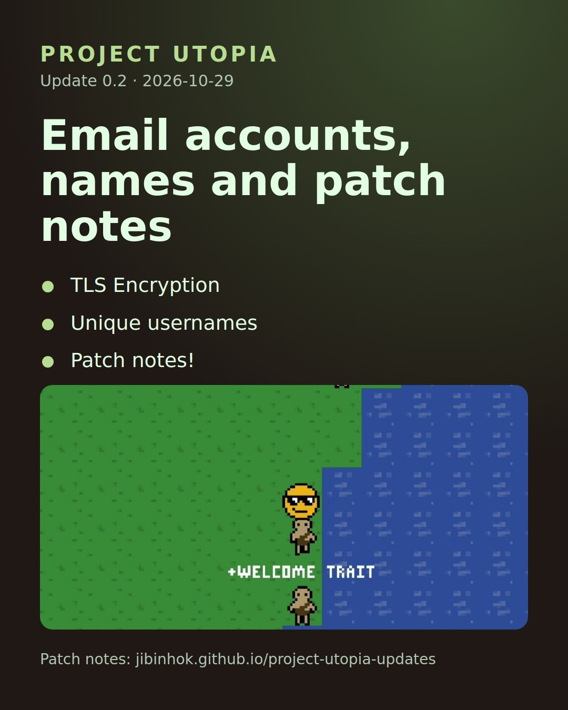

Newest update · 0.2 · 2026-10-29
Email accounts, names and patch notes
- TLS Encryption
- Unique usernames
- Patch notes!
Every update
- 0.2 Email accounts, names and patch notes 2026-10-29
What's coming
The roadmap to the full release. Dates are when each update starts shipping, and can move.
| Dev | Ships | Update | Status |
|---|---|---|---|
| 1 | 2026-10-21 | First playtest | Shipped |
| 2 | 2026-10-29 | TLS, email accounts, patch notes | Building now |
| 3 - 4 | 2026-11-05 | PC client (2 parts) | Planned |
| 5 | 2026-11-19 | Chat and status | Planned |
| 6 | 2026-11-26 | Open areas, home and idling, visit menu | Planned |
| 7 - 8 | 2026-12-03 | World foundation (2 parts) | Planned |
| 9 | 2026-12-17 | Camps | Planned |
| 10 | 2026-12-24 | Names, places and accounts | Planned |
| 11 | 2026-12-31 | Buffer: balance, bugs, performance | Planned |
| 12 | 2027-01-07 | Day and night, age | Planned |
| 13 | 2027-01-14 | Sleep | Planned |
| 14 - 15 | 2027-01-21 | Biome detail (2 parts) | Planned |
| 16 | 2027-02-04 | Sticks, rocks and inventory | Planned |
| 17 - 18 | 2027-02-11 | Build mode and ruins (2 parts) | Planned |
| 19 - 20 | 2027-02-25 | Wildlife (2 parts) | Planned |
| 21 | 2027-03-11 | Hunting and cooking | Planned |
| 22 | 2027-03-18 | Combat (wildlife) | Planned |
| 23 | 2027-03-25 | Factions | Planned |
| 24 | 2027-04-01 | Encampment | Planned |
| 25 | 2027-04-08 | Territory, fighting players | Planned |
| 26 | 2027-04-15 | Skills | Planned |
| 27 - 28 | 2027-04-22 | Line of sight and fog of war (2 parts) | Planned |
| 29 - 31 | 2027-05-06 | Multiple servers (3 parts) | Planned |
| 32, 37 | 2027-05-27 | Release readiness (2 parts) | Planned |
| 33 - 36 | 2027-06-03 | Music: the body as an instrument (4 parts) | Planned |
| - | 2027-07-08 | FULL RELEASE (1.0) on Google Play and Steam | Release |